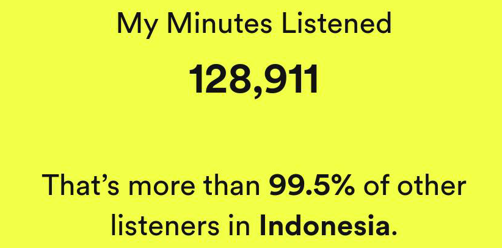

I like listening to different types of music in my free time. I'm not particularly picky with
the type of music I listen to so I guess I like any genre of music.
Here's a trophy from 2022's Spotify Wrapped and a tropy of proof
that I am genuinely that passionate about listening to music :D

Playing the Guitar:
I have been playing guitar since high school since I really enjoy not only listening to music,
but playing it myself.
Since I have an interest in most genre of music, I play both the acoustic
and electric guitar.
Here's a short snippet of one of my practice sessions where I
tried to play Yahya's song "keepyousafe"
Photography:
I've only recently picked this hobby up but I am starting to get into
photography. I take pictures of anything that catches my eye.
As of now, I have not learnt any of the more advanced photography
techniques, so there's not much special in the pictures I take.
However, some examples of what I can do with a camera are in my
gallery which you can check from the button below!